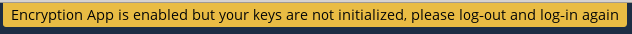

Cifrar sus archivos de Nextcloud en el servidor
Nextcloud incluye una app de cifrado del lado del servidor, y, cuando está habilitada por el administrador de Nextcloud, todos sus archivos serán automáticamente cifrados en el servidor. El cifrado aplica a todo el servidor, por lo que si está habilitado, no podrá escoger entre tenerlos cifrados o no. No necesita hacer nada especial, ya que utiliza su nombre de usuario de Nextcloud como la contraseña para su llave de cifrado única. Solo inicie o cierre sesión y administre sus archivos como normalmente lo haría, y también podrá cambiar su contraseña cuando guste.
Su función principal es cifrar archivos en servicios de almacenamiento remoto que están conectados a su servidor Nextcloud. Esto es una manera sencilla y transparente de proteger sus archivos en almacenamiento remoto. Puede compartir sus archivos remotos a través de Nextcloud del mismo modo, pero no puede compartir sus archivos cifrados directamente desde el servicio remoto que está usando, porque las claves de cifrado están almacenadas en su servidor Nextcloud, y nunca se exponen a proveedores de servicio externos.
Si su servidor Nextcloud no está conectado con ningún servicio de almacenamiento remoto, es mejor utilizar otra forma de cifrado, como cifrar archivos individuales o cifrado completo del disco. Como las claves de cifrado se guardan en su servidor Nextcloud, es posible que su administrador de Nextcloud acceda a sus archivos, y si el servidor queda comprometido, el intruso podría obtener acceso a sus archivos. (Lea cifrado en Nextcloud para aprender más.)
Preguntas más frecuentes de cifrado
¿Cómo se puede deshabilitar el cifrado?
The only way to disable encryption is to run the «decrypt all» script, which decrypts all files and disables encryption.
¿Es posible deshabilitar el cifrado con la clave de recuperación?
Yes, if every user uses the file recovery key, «decrypt all» will use it to decrypt all files.
¿Puede deshabilitarse el cifrado sin la contraseña del usuario?
If you don’t have the users password or file recovery key, then there is no way to decrypt all files. What’s more, running it on login would be dangerous, because you would most likely run into timeouts.
¿Hay planes para mover esto al siguiente inicio de sesión del usuario o una tarea en segundo plano?
Si hiciéramos eso, entonces tendríamos que guardar su contraseña de inicio de sesión en la base de datos. Esto puede ser visto como un problema de seguridad, así que no hay ningún plan similar.
¿Es posible compartir con grupos con la clave de recuperación?
Si se refiere añadir usuarios a grupos y que funcione mágicamente, no. Esto solo funciona con la clave maestra.
Usar el cifrado
El cifrado de Nextcloud es del tipo «actívalo y olvídate», pero tiene unas cuantas opciones que puede usar.
Cuando su administrador de Nextcloud activa el cifrado por primera vez, debe cerrar sesión y reabrirla para crear sus claves de cifrado y cifrar sus archivos. Cuando el cifrado ha sido habilitado en su servidor Nextcloud, verá un cartel amarillo en su página de Archivos, indicándole que cierre sesión y la abra de nuevo:

Cuando inicie sesión de nuevo, puede que tarde unos minutos en conseguirlo, en función del número de archivos que tenga. A continuación volverá a su página por defecto de Nextcloud.

Nota
No debe perder nunca su contraseña de Nextcloud, porque perderá acceso a sus archivos. Sin embargo, hay una opción de recuperación opcional que su administrador de Nextcloud puede habilitar; vea la sección Contraseña de la Clave de Recuperación más adelante para saber más sobre el tema.
Compartir archivos cifrados
Solo aquellos usuarios que tengan claves de cifrado privadas tienen acceso a archivos y carpetas cifrados compartidos. Los usuarios que aún no han creado su clave de cifrado privada no tendrán acceso a archivos compartidos cifrados; verán carpetas y nombres de archivo, pero no podrán abrir ni descargar los archivos. Verán un cartel amarillo de aviso indicando «La aplicación de cifrado está habilitada, pero tus claves no están inicializadas. Por favor, cierra sesión e iníciala de nuevo.»
Los propietarios de archivos o carpetas compartidas deberán re-compartir archivos tras la activación del cifrado; los usuarios que intenten acceder al recurso compartido verán un mensaje indicando que soliciten al propietario del recurso compartido que re-comparta el archivo con ellos. Para archivos compartidos a un solo usuario, deje de compartir y vuelva a compartirlo. Para archivos compartidos a un grupo, compártalos con los individuos que no puedan acceder. Esta acción actualiza el cifrado, y a continuación el propietario del recurso compartido puede borrar los usuarios añadidos de forma individual.
Contraseña de la Clave de Recuperación
Si su administrador de Nextcloud ha habilitado la herramienta de la clave de recuperación, usted puede utilizarla para su cuenta. Si habilita «Recuperación por contraseña», el administrador puede leer sus datos con una contraseña especial. Esta característica permite al administrador recuperar sus archivos si usted pierde su contraseña de Nextcloud. Si la clave de recuperación no está habilitada, no hay manera de restaurar sus archivos si pierde su contraseña de inicio de sesión.

Archivos no cifrados
Solo los datos en tus archivos están cifrados, y no los nombres de archivo o estructuras de carpeta. Estos archivos nunca se cifran:
Viejos archivos en la papelera de reciclaje.
Miniaturas de imágenes de la aplicación Galería
Previsualizaciones de la aplicación Archivos.
El índice de búsqueda de la aplicación Búsqueda en Texto Completo (full text search).
Datos de aplicaciones de terceras partes
Solo aquellos archivos que se compartan con proveedores de almacenamiento de terceras partes pueden ser cifrados, el resto de archivos pueden no ser cifrados.
Cambiar la contraseña de la clave privada
Esta opción solo está disponible si la contraseña de cifrado no ha sido cambiada por el administrador, sino que solo se ha modificado la contraseña de inicio de sesión. Esto puede ocurrir si su proveedor de Nextcloud utiliza un soporte de usuarios externo (por ejemplo, LDAP) y ha cambiado su contraseña de inicio de sesión usando la configuración del soporte externo. En ese caso, usted puede cambiar su contraseña de cifrado a su nueva contraseña de inicio de sesión al proporcionar su antigua y nueva contraseña de inicio de sesión. La aplicación Cifrado solo funciona si su contraseña de inicio de sesión y su contraseña de cifrado son idénticas.